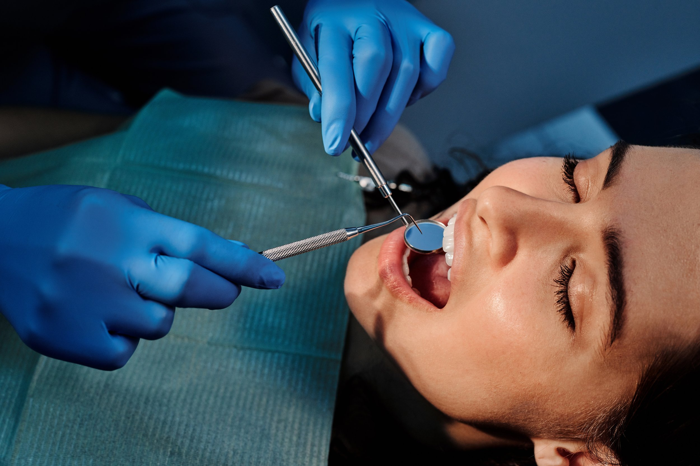
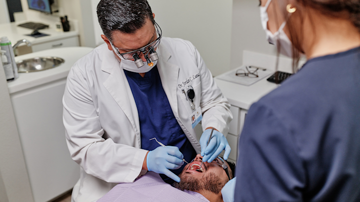
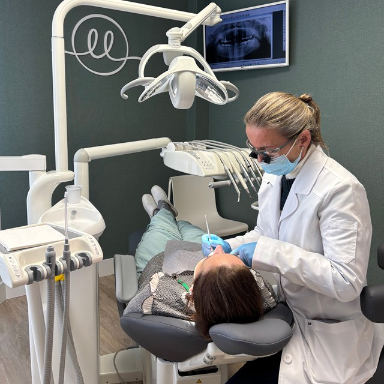
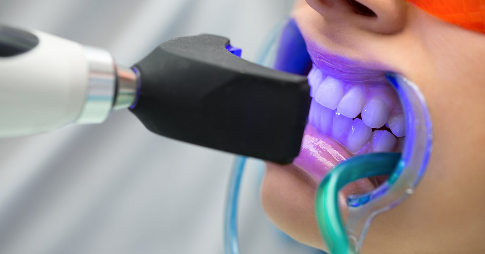
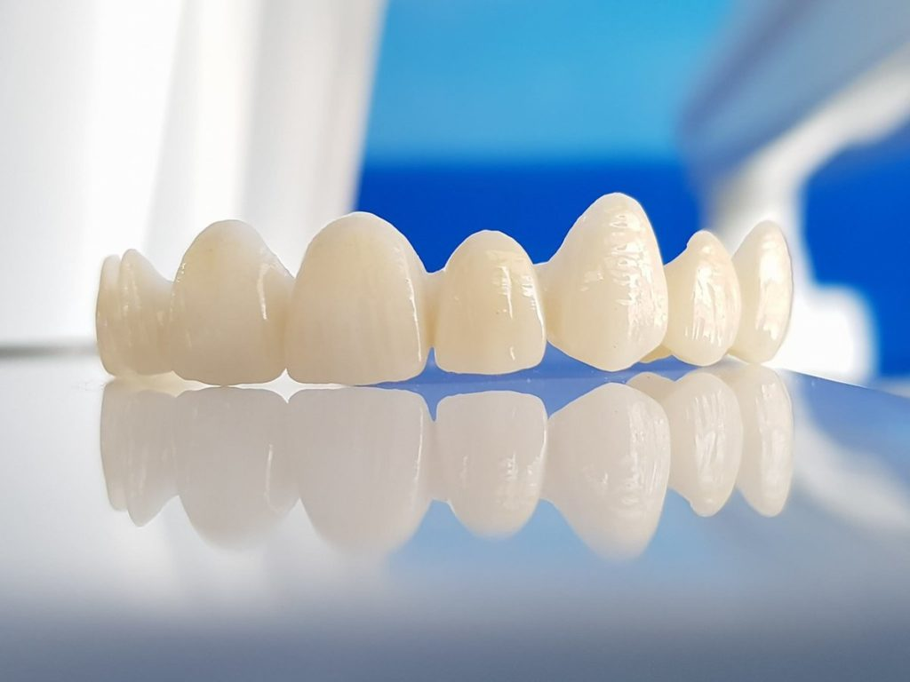
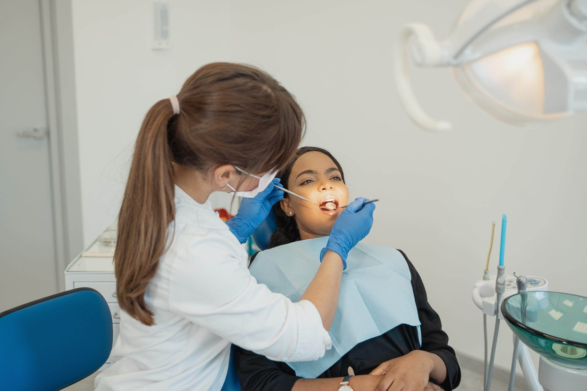

Implantología
Recuperación de dientes perdidos con soluciones fijas, seguras y duraderas que mejoran la función y la estética de tu sonrisa.
Más información →
En Clínica Dental Dr. Jorge González Cogollo cuidamos tu salud bucodental con una atención cercana, tratamientos personalizados y un equipo comprometido con tu bienestar dental en Carabanchel, Madrid.
Ofrecemos tratamientos dentales personalizados para cuidar tu salud bucodental con atención cercana y profesional.

Recuperación de dientes perdidos con soluciones fijas, seguras y duraderas que mejoran la función y la estética de tu sonrisa.
Más información →
Tratamientos para mejorar la alineación dental, la mordida y la estética de la sonrisa en jóvenes y adultos.
Más información →
Tratamientos para mejorar color, forma y armonía de la sonrisa con un enfoque natural y personalizado.
Más información →
Coronas, puentes y restauraciones fijas diseñadas para recuperar comodidad, estética y estabilidad al masticar.
Más información →¿Buscas otro tratamiento dental?
Ver todos los tratamientosCuidamos tu salud bucodental con una atención cercana, tratamientos personalizados y un trato profesional desde la primera visita.
Estamos ubicados en C. de Carrero Juan Ramón, 7, Local, Carabanchel, 28025 Madrid, muy cerca de zonas de Carabanchel y Opañel.
Estudiamos cada caso para recomendar el tratamiento dental más adecuado.
Queremos que te sientas cómodo, escuchado y seguro desde la primera visita.
Trabajamos para mejorar tanto la salud de tu boca como la estética de tu sonrisa.
Opciones de financiación para que puedas acceder a tu tratamiento con comodidad.

Estudiamos tu caso de forma individual para ofrecerte tratamientos dentales adaptados a tus necesidades, cuidando la salud bucodental y la estética de tu sonrisa.
Pide cita llamando al 686 14 27 47Cuidamos tu salud bucodental desde el primer momento con un proceso claro y personalizado.
Analizamos tu salud bucodental para ofrecerte el tratamiento más adecuado.
Utilizamos recursos modernos para realizar tratamientos más precisos y cómodos.
Contamos con profesionales preparados para cuidar tu salud y estética dental.
Te acompañamos en todo el proceso para que te sientas cómodo y seguro.
Pacientes satisfechos en Carabanchel, Madrid.
Excelente atención y gran profesionalidad. Me explicaron todo el tratamiento con claridad y el resultado ha sido perfecto.
María G.Hace 5 mesesFui por una urgencia dental y me atendieron muy rápido. Trato cercano, sin dolor y con mucha confianza.
Carlos R.Hace 6 mesesClínica moderna y muy limpia. Llevo tiempo viniendo y siempre recibo una atención excelente por parte del equipo.
Laura M.Hace 1 mesArtículos y consejos para cuidar tu salud bucodental.
El dolor no siempre aparece al principio. Te explicamos señales, hábitos y momentos en los que conviene pedir una revisión dental preventiva.
Leer más ›Una pieza perdida puede afectar a la masticación y a la estabilidad del resto de dientes. Conoce cuándo puede ser útil estudiar un implante dental.
Leer más ›La ortodoncia no solo busca alinear los dientes: también puede ayudar a mejorar la función, la higiene y la comodidad al masticar.
Leer más ›C. de Carrero Juan Ramón, 7, Local, Carabanchel, 28025 Madrid
Estamos aquí para ayudarte. Contacta con la clínica para reservar tu cita.
C. de Carrero Juan Ramón, 7, Local, Carabanchel, 28025 Madrid